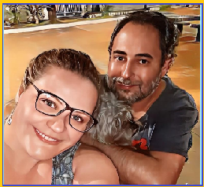

Desenvolvedor Full-Stack e Especialista em Análise de Dados
Sou Fabiano, um apaixonado pela tecnologia com uma longa trajetória de superação e aprendizado.
Tenho mais de uma década de experiência no setor de TI, começando minha jornada com sistemas MS-DOS e evoluindo para a era moderna da computação. Me especializei em áreas como Desenvolvimento Web, Análise de Dados, Infraestrutura e Suporte Técnico.
Ao longo da minha carreira, trabalhei em grandes empresas como TIVIT, Algar Tech e Iamit Soluções, desenvolvendo habilidades essenciais em ambientes dinâmicos e desafiadores. Minha experiência também inclui o gerenciamento de infraestruturas complexas, análise de dados com Power BI e Python, e a implementação de soluções em plataformas de nuvem como AWS e Google Cloud.

Com uma mentalidade orientada para resultados, busco sempre superar desafios, entregar soluções eficazes e contribuir para o sucesso dos meus colegas e das empresas com as quais colaboro.
Você nunca é velho demais para estabelecer outra meta ou sonhar um novo sonho. Acredite em seu potencial, e você estará a meio caminho da conquista. Você pode escolher ficar parado ou acompanhar a transformação que está acontecendo ao seu redor.
Formação
Minha base acadêmica me proporcionou conhecimentos sólidos em TI e desenvolvimento de sistemas, permitindo aplicar conceitos de gestão de tecnologia e programação na prática.
Centro Universitário Senac
Gestão da Tecnologia da Informação (trancado)
Gran Faculdade
Tecnólogo em Análise e Desenvolvimento de Sistemas – Início: 2025 – Em andamento
Estou focado em me especializar continuamente, acompanhando as tendências do mercado de TI, com ênfase em desenvolvimento de software, análise de dados e soluções modernas em nuvem.
Cursos e Certificações
Ao longo da minha carreira, busquei complementar minha formação com cursos práticos e certificações relevantes em TI, Data Analytics, Cloud e desenvolvimento.
- SENAC: Instalação e Manutenção de PCs – São Paulo, Dezembro/2014 – 240 horas
- Ka Solution Tecnologia em Software: Microsoft Security Compliance (SC900) – São Paulo, 2021
- SENAI: Tecnologia da Informação e Comunicação – Janeiro/2023 – 14 horas
- DIO: Python Data Analytics, Python AI Backend Developer – 2023-2024
- Fundação Bradesco e Suzano: Data Analytics com Power BI – 2023-2025
- Escola das Nuvens: AWS re/Start Graduate – 2024
- NTT DATA: Engenharia de Dados com Python – 2024
- Bootcamp Santander: Ciências de Dados com Python – 2025
- CC50: Introdução à Ciência da Computação (Harvard) – Fundação Estudar – 2024
Habilidades Técnicas
- Sistemas Operacionais: Windows, Linux, macOS, Android
- Linguagens de Programação: Python, JavaScript, Python Data Analytics
- Plataformas de Nuvem: AWS, Google Cloud, Citrix, Virtual Machines
- Ferramentas de Análise de Dados: Power BI, MySQL, PostgreSQL
- Desenvolvimento Web: HTML, React, JavaScript
- Outras ferramentas: Office 365, Microsoft Teams, Active Directory, ServiceNow
Experiência Profissional
Trabalhei em empresas renomadas como TIVIT, Algar Tech, Iamit Soluções e Azul Linhas Aéreas, desempenhando funções como:
- Suporte Técnico e Infraestrutura: atendimento remoto/presencial, resolução de incidentes complexos.
- Administração de Sistemas e Redes: Windows, Linux, VPN, Citrix, Active Directory, segurança corporativa.
- Análise de Dados e Business Intelligence: Power BI, Python, geração de insights estratégicos.
- Projetos de Melhoria e Implementação: SMARTKARGO, projeto APU Zero e outros projetos internos de otimização.
Soft Skills
- Comunicação clara e eficaz
- Proatividade e resolução de problemas
- Trabalho em equipe e colaboração
- Orientação para resultados
- Resiliência e adaptabilidade
Atividades Pessoais
Futebol, xadrez, literatura, conservação ambiental, cuidado com pets e culinária. Essas atividades fortalecem criatividade, equilíbrio e espírito de equipe.
Recomendações LinkedIn
- Douglas Moreira: "Ótimo profissional, dedicado e sempre disposto a ajudar."
- Rita de Cassia Aires: "Bom profissional, responsável e sempre dedicado a aprender."
- Kassio Araujo: "Bom relacionamento interpessoal e dedicado."
- Fernando Pazzim: "Ótimo profissional, pró-ativo e analítico."
- Luiz Alberto Carnaval: "Fabiano é excelente, proativo e eficiente."
- Rafael Secco Olivastro: "Profissional muito dedicado e trabalha bem em equipe."
- Tiago Garcia Xavier: "Funcionário experiente e focado."
- Patricia Conceição Barbosa: "Precisão, esforço e disponibilidade."
- Hernani Donato: "Competente em suporte e infraestrutura."
- Ronye Katachinski: "Sempre ativo e colaborativo."
- Marco Aurelio Garcia: "Pontual, motivado e pronto para desafios."